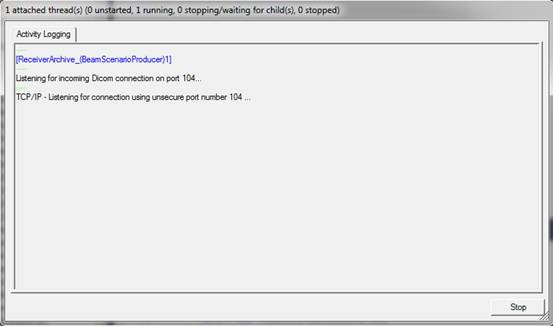

Instruction for use test scenarios
This document describes how to run test scenarios using the DVTk based IHE-RO TestTool TDW-II 2013.
Start the IHE-RO test tool by clicking the “TestScenarios IHE-RO TDW-II 2013” shortcut.
Configuration
First the testtool needs to be configured, starting with the connection details. The actor under test network settings need to be configured. Select the ‘Session Information’ tab and configure the actor under test AE title, ip-address and port number. Make sure that the IHE test tool AE title and port is correctly configured at the actor side as well.

Running a scenario
The DVT application has 2 panes. Initially the test scenarios are not shown in the left pane. The test scenarios can be made visible by clicking on the “+” sign left from the text “TestScenarios.ses”.
Selecting one of the available test scenarios will show the overview of that particular test scenario in the right pane.
The test scenario will start executing by double clicking on the test scenario name in the left pane (e.g. double click on the text 2013TDDScenario_01_RetrievalOfWorklist.vbs in the left pane)
When a test scenario starts executing a pop up window will appear showing the activity logging. See example below.

Testscenarios send transactions to the actor under test and expect to receive transactions from the actor under test. A testscenario will first send all transactions belonging to the scenario. After sending it will wait for incoming transactions form the actor under test. While the test tool is listening a dialog will be shown as can be seen below.

When all transactions have been sent to the test tool the user can continue on with the validation of all received transactions by closing the dialog. The dialog can be closed by clicking the ‘Stop listening and start validation’ button. All received scenario transactions are validated against the IHE-RO RT objects profile requirements. The results will be shown in the test tools main window.
Test Results
The result files of all tested scenarios are located at “<Instalation dir>\IHE-RO-TestTool-TDW-II-2013\2013 TestTool TDW-II\Resultfiles”.